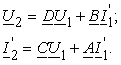

Основными уравнения ЧП называют соотношения из двух уравнений, связывающие токи и напряжения (I1, U1, I2, U2) на его выводах. В зависимости от того, какие две величины выбраны в качестве независимых, а какие − в качестве зависимых переменных, каждому ЧП можно поставить в соответствие шесть систем уравнений (табл. 2.5), именуемых соответственно A-, B-, G-, H-, Y- и Z-формами.
К о м м е н т а р и и к т а б л и ц е 2.8.1. Если в ЧП поменять местами вход и выход, соответственно токи I1 и I2 в (2.127') заменить на токи I'1 и I'2 и решить уравнения (2.127') относительно U2 и I'2, то в уравнениях (2.127') коэффициенты A и D поменяются местами, т.е.
К о м м е н т а р и и к т а б л и ц е 2.8.1. Если в ЧП поменять местами вход и выход, соответственно токи I1 и I2 в (2.127') заменить на токи I'1 и I'2 и решить уравнения (2.127') относительно U2 и I'2, то в уравнениях (2.127') коэффициенты A и D поменяются местами, т.е.
 (2.127'')
Фактически это запись В-формы через коэффициенты А-формы.
2. Хотя имеем шесть систем уравнений ЧП, но математически они равносильны. Если известны коэффициенты какой-либо системы уравнений, то для нахождения коэффициентов другой формы можноо воспользоваться формулами перехода, приводимых в справочниках.
Щёлкните мышью на слове Таблица 2.8